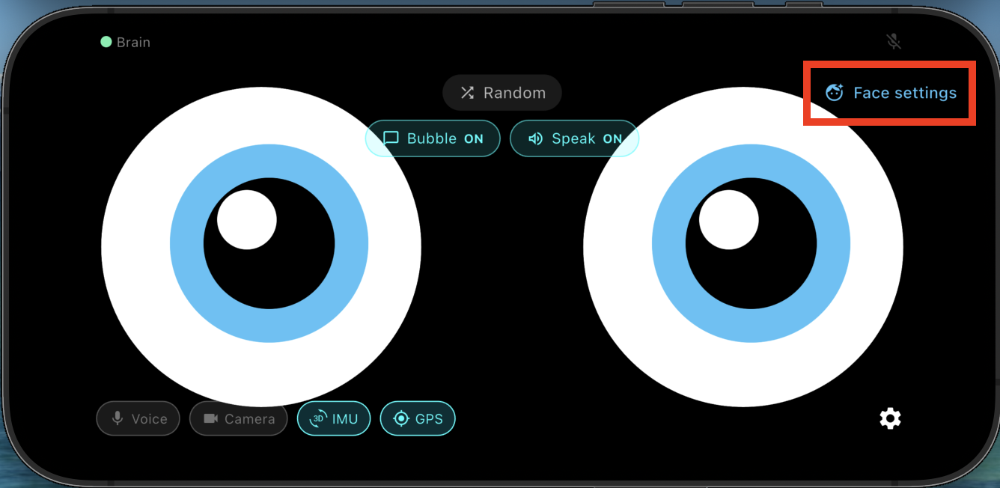
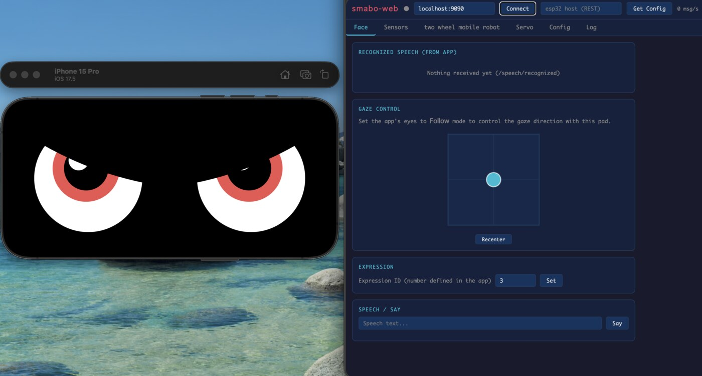
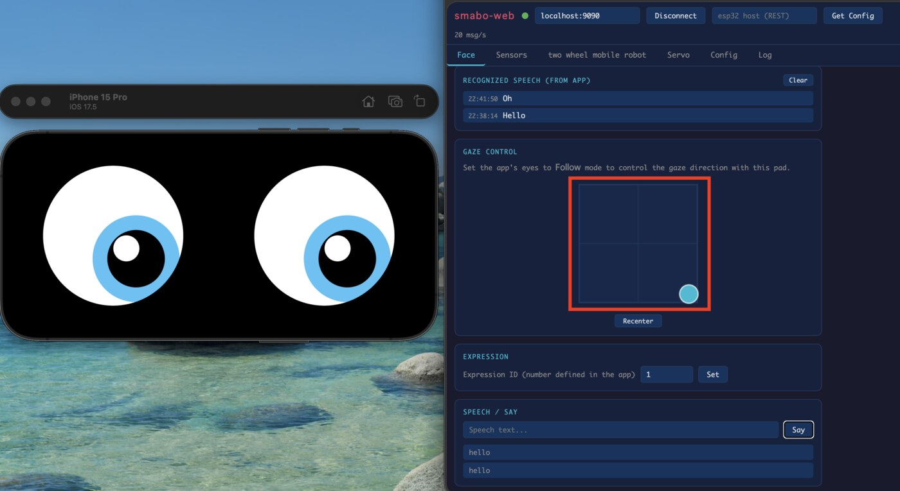
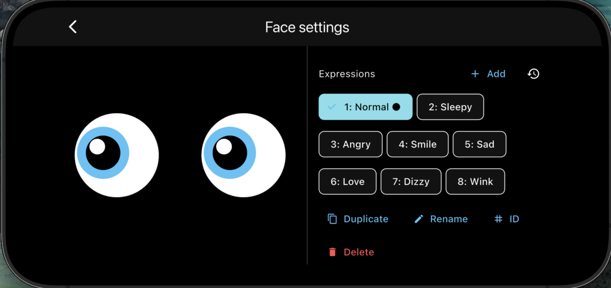

Roadmap#
This page is the guide for the "smabo's Face" node on the roadmap below.
This guide assumes you have completed the smabo-app setup.
Overview#
This page explains the Face feature of smabo.
Specifically, you will:
- Change smabo's expressions via smabo-web
- Control smabo's eyes via smabo-web
Operation#
Startup Procedure#
Follow the startup procedure here.
Changing Expressions#
In smabo-web, open the Face Settings.

Select an expression from the list to change smabo's face.

Eye Control#
The Eye Controller lets you manually move smabo's eyes.

Drag anywhere on the controller to point smabo's eyes in that direction.
Follow Mode#
Enable Follow mode to make smabo's eyes follow your finger.

Face Settings#
In Face Settings, you can customize each facial expression (colors, shapes, animation speed, etc.).

Next#
This is a terminal node on the roadmap.
To explore other features, pick another page from the roadmap.